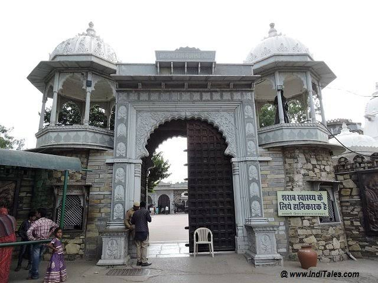
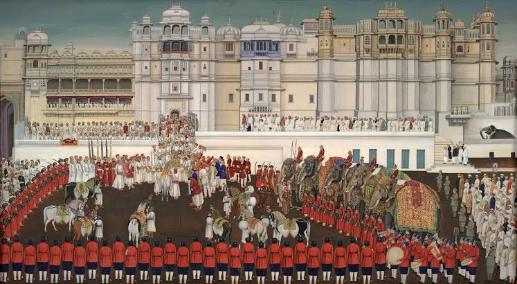

Sisodia (Mewar) Explorer
Climb the ramparts of Chittorgarh and ride into the pass at Haldighati. Discover the Sisodias of Mewar — the Rajput dynasty whose refusal to bow to Mughal power made Maharana Pratap a lasting symbol of resistance and self-respect.
The Sisodias of Mewar, Guardians of Rajput Honour
The Sisodias are a branch of the Guhila (Gahlot) Rajput clan who rose to become the ruling house of Mewar, a kingdom centered on the hilltop fortress of Chittorgarh in southern Rajasthan. The dynasty traces its line to Bappa Rawal, the semi-legendary 8th-century figure credited with founding Mewar's rule around 734 CE.
Chittorgarh's commanding position made it both a prize and a target. The fort endured three great sieges — by Alauddin Khalji in 1303, by Bahadur Shah of Gujarat in 1535, and finally by the Mughal emperor Akbar in 1568 — each answered with the legendary Rajput response of a final charge and self-sacrifice by the fort's defenders. Between these sieges, Rana Kumbha built an extraordinary network of forts in the 15th century, and it was Maharana Pratap, in the generation after Chittorgarh's fall, who turned Mewar's long resistance into its most enduring legend.
🛡️ The Sisodia Legacy
- c. 734–1818 CE — Nearly eleven centuries of Sisodia rule over Mewar.
- Capitals at Chittorgarh & Udaipur — Udaipur founded by Udai Singh II before Chittorgarh's final fall.
- Suryavanshi Rajput Lineage — A clan identity built around honour, defiance, and hill-fort defense.
- UNESCO Recognition — Chittorgarh and Kumbhalgarh are part of the Hill Forts of Rajasthan World Heritage Site.
Major Rulers of the Sisodia Line
From the dynasty's traditional founder to the ruler whose name became synonymous with Rajput resistance.
Bappa Rawal (r. c. 734–753)
Traditional founder of the Sisodia line, credited with establishing Mewar's ruling house at Chittorgarh.
Rana Kumbha (r. 1433–1468)
Expanded Mewar after defeating the sultans of Malwa and Gujarat, built Kumbhalgarh Fort, and raised the Vijay Stambh (Tower of Victory) at Chittorgarh.
Rana Sanga (r. 1508–1528)
Led a large Rajput confederacy against Babur at the Battle of Khanwa in 1527; his defeat opened the way for Mughal expansion into Rajasthan.
Maharana Pratap (r. 1572–1597)
The most celebrated Sisodia ruler. Refused to submit to Akbar even after losing Chittorgarh, fought the Battle of Haldighati in 1576, and waged years of guerrilla resistance to reclaim Mewar.
Rana Amar Singh I (r. 1597–1620)
Son of Maharana Pratap. Continued the resistance before signing an 1615 treaty with Jahangir that preserved more of Mewar's dignity than most other Rajput settlements with the Mughals.
⚔️ Hallmarks of Sisodia Military Strategy
- Hill Fort Defense: A chain of strongholds — Chittorgarh, Kumbhalgarh, Gogunda — used to offset larger imperial armies with terrain and fortification.
- Guerrilla Resistance: After Chittorgarh's fall, Maharana Pratap avoided pitched battles where possible, harassing Mughal supply lines from the Aravalli hills for years.
- The Legend of Chetak: Pratap's horse Chetak, mortally wounded while carrying him to safety at Haldighati, remains a lasting symbol of loyalty in Rajput memory.
- Refusal of Matrimonial Alliance: Unlike several other Rajput houses, the Sisodias declined to give princesses in marriage to the Mughal court.
- Bhamashah's Support: The merchant-minister Bhamashah financed Pratap's campaigns at a critical moment, helping sustain the resistance after Haldighati.
Haldighati and the Long Defense of Mewar
On 18 June 1576, Maharana Pratap's forces met a much larger Mughal army led by Man Singh of Amber at the narrow pass of Haldighati. The battle ended without a decisive Mughal victory, and Pratap escaped to continue the fight from the hills — a retreat that, in Rajput memory, became as significant as any outright win.
For the next two decades, Pratap waged a patient campaign of reclamation, recovering most of Mewar except Chittorgarh and Mandalgarh by the time of his death in 1597. His refusal to appear at the Mughal court, unlike most other Rajput rulers, turned Mewar's resistance into a doctrine of honour that outlasted his own reign — carried forward by his son Amar Singh I until the 1615 settlement with Jahangir.
Chronology of the Sisodia Dynasty
From Bappa Rawal's founding of Mewar to the kingdom's accession into independent India.
Founding of the Dynasty
Bappa Rawal establishes the Sisodia line of Mewar, ruling from Chittorgarh.
First Siege of Chittorgarh
Alauddin Khalji besieges and sacks Chittorgarh, the first of three great sieges of the fort.
Rana Kumbha's Reign
Kumbhalgarh Fort and the Vijay Stambh are built after victories over the Malwa and Gujarat sultanates.
Battle of Khanwa
Rana Sanga leads a Rajput confederacy against Babur and is defeated, opening Rajasthan to Mughal expansion.
Third Siege of Chittorgarh
Akbar's forces capture Chittorgarh; Udai Singh II had already founded Udaipur as a new seat of power.
Battle of Haldighati
Maharana Pratap faces the Mughal army under Man Singh of Amber; his horse Chetak dies covering his retreat.
Treaty with Jahangir
Rana Amar Singh I settles with the Mughals on terms more dignified than those of most other Rajput houses.
British Paramountcy to Independence
Mewar becomes a British princely state in 1818 and accedes to independent India in 1949, joining Rajasthan.
Forts and Legends of the Sisodias
A glimpse at the forts, battlefields, and art associated with the Sisodia dynasty of Mewar.





📚 References & Further Reading
- Tod, James (1829). Annals and Antiquities of Rajasthan.
- Sarda, Har Bilas (1918). Maharana Pratap Singh. Ajmer Scottish Mission Industries.
- Encyclopaedia Britannica. Mewar.
- Archaeological Survey of India. Monument records: Chittorgarh Fort and Kumbhalgarh Fort, Rajasthan.
- UNESCO World Heritage Centre (2013). Hill Forts of Rajasthan — nomination dossier.